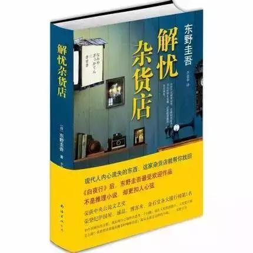
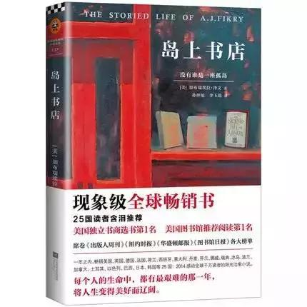

该书讲述了在僻静街道旁的一家杂货店，只要写下烦恼投进店前门卷帘门的投信口，第二天就会在店后的牛奶箱里得到回答：因男友身患绝症，年轻女孩月兔在爱情与梦想间徘徊；松冈克郎为了音乐梦想离家漂泊，却在现实中寸步难行；少年浩介面临家庭巨变，挣扎在亲情与未来的迷茫中……他们将困惑写成信投进杂货店，奇妙的事情随即不断发生。

该书偏重个人的情节，从阿米尔与他父亲仆人儿子哈桑的亲密友谊开始，这段感情成为贯穿全书的脉络。这两个男孩所放的风筝，象征了他们之间关系的脆弱，在往日生活消逝之际，备受考验。作者笔下的阿富汗温馨闲适，却因为不同种族之间的摩擦而现紧张。书中充满令人回萦难忘的景象：一个为了喂饱孩子的男人在市场上出售他的义腿；足球赛中场休息时间，一对通奸的情侣在体育场上活活被石头砸死；一个涂脂抹粉的男孩被迫出卖身体，跳着以前街头手风琴艺人的猴子表演的舞步。
《岛上书店》是现象级全球畅销书，美国独立书商选书第1名，美国图书馆推荐阅读第1名。一年之内，《岛上书店》畅销美国、英国、德国、法国、荷兰、西班牙、意大利、丹麦、芬兰、挪威、瑞典、冰岛、波兰、加拿大、土耳其、以色列、巴西、日本、韩国等25国，是感动全球千万读者的阳光治愈小说。一个失去了一切的人，如何重新找到牵挂，书，爱情，宴会和欢笑，以及一切美好生活。每个人的生命中，都有最艰难的那一年，将人生变得美好而辽阔。

《偷影子的人》是一首对童年、梦想以及想像力的颂歌。作者写作技法栩栩如生，极富电影般的临场感。在《偷影子的人》中，马克·李维忠于自己，用一贯简单、明确又有效的笔法述说了一则感人的故事。作家成功地钻入主角的躯体，以完美语气演绎了一个能和影子对话的小男孩以及一名医学院的杰出学生。马克．李维深谙善用自身过人的感受力，从亲身经历中深掘出滋养书中人物及故事的生命力，而作家对营造美丽爱情故事的写作才华以及对书中角色精辟的心理分析。
书中的可鲁曾真实存在。一只聪明的、一生都在工作的狗，在人世间走过了12年的岁月。它作为一只社会服务犬的一生被摄影师秋元良平拍摄了下来，从出生到死亡，秋元先生一直用镜头跟踪可鲁的生活，最终编辑成《再见了，可鲁》。据说，作者用了15年的时间才完成这只小狗的传记。
《芒果街上的小屋》是一本优美纯净的小书，一本“诗小说”。它由几十个短篇组成，一个短篇讲述一个人、一件事、一个梦想、几朵云，几棵树、几种感觉，语言清澈如流水，点缀着零落的韵脚和新奇的譬喻，如一首首长歌短调，各自成韵，又彼此钩连，汇聚出一个清晰世界，各样杂沓人生。
恩佐是一只聪明的狗，它的成长经历和人类一样。它要学会分享主人的爱，在丹尼娶了伊芙后，它曾一度和伊芙争风吃醋，忍受着丹尼对伊芙的迷恋；它学着接受伊芙和伊芙肚子里的孩子，在丹尼去赛车，伊芙早产，恩佐看着这颗从伊芙的日渐隆起的肚子里挤出的小肉球，看到伊芙抱着孩子哭了起来，它走上前，安慰他的女主人，答应要保护这个叫卓伊的小天使；它不离不弃地陪着他们，看着伊芙去世，丹尼被岳父母陷害，卓伊被迫和富裕的外公外婆住。但它只能默默地给丹尼安慰，默默地陪着卓伊玩“恩佐接”的游戏。
《牧羊少年奇幻之旅》是部追求梦想、完善人生的寓言故事，启示人们实现梦想要经历一个艰难的过程，需要勇气、智慧、执著和经受考验。这部富有强烈象征色彩的作品在世界各地受到欢迎，评价达到极高的成就。美国图书馆协会将该书推荐为“青少年最佳读物”。法国文化部部长将保罗·科埃略称为“数百万读者心中的炼金术士”。西方评论家把本书誉为影响作者心灵一辈子的现代经典。

这本被全球人深深钟爱的书，记录了纽约女作家海莲和一家伦敦旧书店的书商弗兰克之间的书缘情缘。双方二十年间始终未曾谋面，相隔万里，深厚情意却能莫逆于心。无论是平淡生活中的讨书买书论书，还是书信中所蕴藏的难以言明的情感，都给人以强烈的温暖和信任。表现了海莲对书的激情之爱，也反映了她对弗兰克的精神之爱。海莲的执著、风趣、体贴、率真，跳跃于一封封书信的字里行间，使阅读成为一种愉悦而柔软的经历。来往的书信被海莲汇集成此书，被译成数十种文字流传。
24世纪，人类发明了时间力场。27世纪，人类在掌握时间旅行技术后，成立了一个叫做永恒时空（Eternity）的组织，在每个时代的背后，默默地守护着人类社会的发展。永恒时空以一个世纪为单位，并视每个世纪的发展需要而加以微调，以避免社会全体受到更大伤害。通过纠正过去的错误，将所有灾难扼杀在萌芽中，人类终于获得安宁的未来。然而，这种“绝对安全”的未来却在某一天迎来了终结。不知不觉中形成的因果链，仿佛从四面八方涌来的黑暗，即将吞噬全人类。
在《泛若不系之舟》里，傅真与毛铭基行走于印度、泰国、缅甸、老挝等亚洲国家，最后回到二人初见的拉萨。这本书的文字跟随他们颠沛流离，在记事本、电脑、夜车、小旅馆和咖啡店中辗转漂泊，诚实地记录着他们一路的见闻故事，探索着信仰、精神与内心价值，也见证着普通小人物身上顽强的生存本领。无论生活多么沉重、艰辛或不公，他们奋力向前，笑着流泪，珍视情感，保有尊严。
诠释青春年少时，爱上一个人的所有心情。“洛枳爱盛淮南，谁也不知道。”你有没有爱过一个人，爱到刻骨铭心，却无人知晓？只因为幼时的一次遇见，洛枳在长达十一年的时光里，都有一个隐隐约约的盛淮南。他的再次出现，是那么光芒万丈，从此以后，洛枳的日记成了只属于他一个人的独幕剧。洛枳爱的那么卑微，那么细致，又那么骄傲，她的心魔成长得如此迅猛，再也无法简简单单地收复得了。他就在那里，在洛枳的心里，在洛枳的眼前，只需要迈出一步，就能够打破这十几年的距离。可是世界上最远的距离，不是爱着你，你不知道，而是爱着你，却触碰不到。北京烦嚣的城中，P大如此广阔，却像遥远北方的振华高中，让洛枳无处可逃。
《活着》讲述一个人一生的故事，这是一个历尽世间沧桑和磨难老人的人生感言，是一幕演绎人生苦难经历的戏剧。小说的叙述者“我”在年轻时获得了一个游手好闲的职业——去乡间收集民间歌谣。余华听到一首美国民歌《老黑奴》，歌中老黑奴经历一生苦难，家人都先他而去，而他依然友好地对待世界，没有一句抱怨的话。余华决定写下《活着》，写下人对苦难的承受能力，对世界乐观的态度。不要问活着的意义是什么，活着本身就是意义。
《陪安东尼度过漫长岁月》收集了作者安东尼在《最小说》上刊登过的部分散文，以及50%以上的最新作品。安东尼以一个普通男生的口吻，讲述了从20到23、从大学到工作、从国内到国外的真诚记载。其中既有生活的零散片段、自言自语，也有对生活的感悟。以时间为载体，散文为格式，将日记、随笔，甚至是墙上的便条联系到一起。带领每位读者陪安东尼度过遥远的旅行、孤独的时刻，以及漫长的岁月。